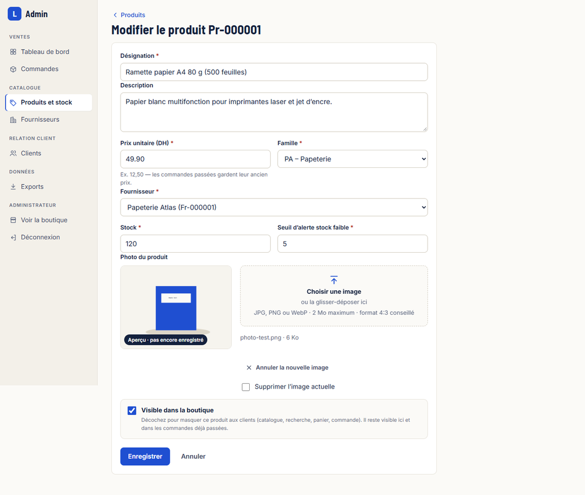

Partie 3
L’administration
Connectez-vous avec admin@larashop.test / password : vous arrivez sur /admin.
Toutes les routes de cette partie sont regroupées dans routes/web.php sous un même préfixe, un même
début de nom et les mêmes middlewares :
Route::middleware(['auth', 'admin'])->prefix('admin')->name('admin.')->group(function () {
Route::get('/', [Admin\DashboardController::class, 'index'])->name('dashboard');
Route::resource('clients', Admin\ClientController::class)->except('show');Le middleware admin est la classe app/Http/Middleware/EnsureUserIsAdmin.php, déclarée sous ce nom
court dans bootstrap/app.php :
public function handle(Request $request, Closure $next): Response
{
abort_unless($request->user()?->isAdmin(), 403, 'Accès réservé aux administrateurs.');
return $next($request);
}14. Le tableau de bord
Point de départ
La connexion d’un administrateur, ou le lien « Tableau de bord » de la barre latérale (resources/views/layouts/admin.blade.php).
Fichiers concernés
- Route
- GET
/admin(admin.dashboard) - Contrôleur
DashboardController@index- Vue
resources/views/admin/dashboard.blade.php
Ce qui se passe
$stats = [
'clients' => Client::whereNull('archived_at')->count(),
'suppliers' => Supplier::whereNull('archived_at')->count(),
'products' => Product::available()->count(),
'orders' => Order::count(),
'pending' => Order::where('status', 'pending')->count(),
// Revenue of non-cancelled orders (SUM on DECIMAL columns stays exact in SQL).
'revenue' => Order::where('status', '!=', 'cancelled')->sum('total'),
];Le contrôleur charge aussi les 8 commandes les plus récentes et les 10 produits en stock faible. Un produit est en
stock faible quand son stock est inférieur ou égal à son seuil d’alerte ; la comparaison de deux colonnes se fait avec whereColumn :
public function scopeLowStock(Builder $query): Builder
{
return $query->whereColumn('stock', '<=', 'low_stock_threshold');
}Résultat

Ce qui peut mal tourner
- Un client qui tape
/adminreçoit la page 403 « Accès réservé aux administrateurs. » ; un visiteur est envoyé sur/connexion. - Aucun produit sous son seuil : « Aucun produit sous son seuil d’alerte. »
Notions utilisées
- Groupe de routes :
prefix('admin')ajoute/adminaux adresses,name('admin.')préfixe les noms,middleware([...])protège tout le groupe. - Agrégats :
count()etsum()sont calculés par la base, pas en PHP.
15. Les clients (CRUD)
CRUD signifie Create, Read, Update, Delete : créer, lire, modifier, supprimer. Laravel fournit les sept routes
d’un CRUD en une ligne avec Route::resource() (ici sans la page « show », inutile).
| Action | Méthode et adresse | Nom de route | Méthode du contrôleur |
|---|---|---|---|
| Lister | GET /admin/clients | admin.clients.index | ClientController@index |
| Formulaire de création | GET /admin/clients/create | admin.clients.create | ClientController@create |
| Enregistrer | POST /admin/clients | admin.clients.store | ClientController@store |
| Formulaire de modification | GET /admin/clients/{client}/edit | admin.clients.edit | ClientController@edit |
| Mettre à jour | PUT /admin/clients/{client} | admin.clients.update | ClientController@update |
| Supprimer ou archiver | DELETE /admin/clients/{client} | admin.clients.destroy | ClientController@destroy |
| Restaurer (ajout) | PATCH /admin/clients/{client}/restaurer | admin.clients.restore | ClientController@restore |
Point de départ
Barre latérale → Clients. Bouton « + Nouveau client », boutons « Modifier » et « Supprimer » sur chaque ligne, « Restaurer » sur les clients archivés.
Fichiers concernés
- Contrôleur
app/Http/Controllers/Admin/ClientController.php- Validation
app/Http/Requests/ClientRequest.php- Modèle
app/Models/Client.php(portéefilter(), constanteTYPES), traitapp/Models/Concerns/Archivable.php- Vues
resources/views/admin/clients/index.blade.php,resources/views/admin/clients/form.blade.php(un seul formulaire pour créer et modifier),resources/views/admin/_row-actions.blade.php,resources/views/admin/_archive-filter.blade.php,resources/views/admin/_table-toolbar.blade.php
Ce qui se passe
Liste. Les filtres de l’adresse (q, type, archived) sont lus par une méthode
commune à tous les contrôleurs, qui ne garde que des textes :
protected function filters(Request $request, array $keys): array
{
$filters = [];
foreach ($keys as $key) {
$value = $request->query($key);
if (is_string($value) && trim($value) !== '') {
$filters[$key] = mb_substr(trim($value), 0, 100);
}
}
return $filters;
}Création et modification. La validation est déplacée dans une Form Request : Laravel l’exécute avant
d’entrer dans la méthode du contrôleur, qui reçoit des données déjà propres avec $request->validated().
public function rules(): array
{
return [
'name' => ['required', 'string', 'max:120'],
'street' => ['required', 'string', 'max:190'],
'postal_code' => ['required', 'string', 'max:10', 'regex:/^[0-9A-Za-z \-]+$/'],
'city' => ['required', 'string', 'max:100'],
'type' => ['required', Rule::in(array_keys(Client::TYPES))],
'special_discount' => ['required', 'integer', 'between:0,100'],
];
}Le code Cli-0000xx est fabriqué automatiquement (chapitre 4). Changer la remise n’affecte que les
prochaines commandes : les anciennes gardent leur discount_rate.
Supprimer ou archiver ?
Supprimer un client qui a des commandes casserait l’historique (les commandes pointeraient vers rien ; la clé étrangère
restrictOnDelete() l’interdit d’ailleurs). Le contrôleur archive donc au lieu de supprimer :
public function destroy(Client $client)
{
if ($client->orders()->exists() || $client->user()->exists()) {
$client->archive();
return back()->with('success', "Client {$client->code} archivé (il possède un historique, il n’a pas été supprimé).");
}
$client->delete();
return back()->with('success', "Client {$client->code} supprimé.");
}archive() vient du trait app/Models/Concerns/Archivable.php, partagé par les clients, fournisseurs
et produits. Il remplit archived_at ; la portée archiveState() choisit ensuite d’afficher les actifs, les archivés ou tous.
Résultat
Retour à la liste avec « Client Cli-000009 créé. », « … mis à jour. », « … archivé (il possède un historique…) » ou « … supprimé. ».
Ce qui peut mal tourner
- Remise de 101 % ou type inconnu : message sous le champ, rien n’est enregistré.
- Un client qui n’est pas administrateur ne peut pas envoyer ces formulaires : le middleware répond 403, et
ClientRequest::authorize()vérifie aussi le rôle. - Comportement observé : un client archivé disparaît des listes mais son compte peut toujours se connecter (voir les écarts).
Supprimez Cli-000001 : il est archivé, pas supprimé. Choisissez « Archivés » dans le filtre « Affichage », puis « Restaurer ».
Notions utilisées
- Contrôleur de ressource et
Route::resource(): les sept actions CRUD aux noms standard (index, create, store, show, edit, update, destroy). - Form Request : classe de validation (
authorize(),rules(),messages()). - Méthodes HTTP : PUT pour remplacer une fiche, DELETE pour supprimer, envoyées via
@method('PUT')/@method('DELETE'). - Trait : morceau de code PHP réutilisé par plusieurs classes (
use Archivable;).
16. Les fournisseurs (CRUD)
Point de départ
Barre latérale → Fournisseurs. Le nombre de produits de chaque fournisseur est un lien vers la liste des produits filtrée.
Fichiers concernés
- Routes
Route::resource('fournisseurs', …)->parameters(['fournisseurs' => 'supplier'])->names('suppliers'): adresses en français (/admin/fournisseurs), noms en anglais (admin.suppliers.index,admin.suppliers.store…), plusadmin.suppliers.restore- Contrôleur
app/Http/Controllers/Admin/SupplierController.php(règles de validation dans sa méthode privéerules())- Vues
resources/views/admin/suppliers/index.blade.php,resources/views/admin/suppliers/form.blade.php
Ce qui se passe
Même principe que les clients, avec une validation plus courte écrite dans le contrôleur
($request->validate($this->rules())). Règle 6 du PDF : chaque produit garde son fournisseur, donc un fournisseur qui
fournit encore des produits est archivé, jamais supprimé.
if ($supplier->products()->exists()) {
$supplier->archive();Un fournisseur archivé ne peut plus être choisi pour un produit : la règle
Rule::exists('suppliers', 'id')->whereNull('archived_at') de app/Http/Requests/ProductRequest.php le refuse.
Résultat
« Fournisseur Fr-000007 créé. », « … archivé (il fournit des produits, il n’a pas été supprimé). » ou « … supprimé. ».
Ce qui peut mal tourner
- Nom ou ville vide : message sous le champ.
- Un fournisseur sans produit est vraiment supprimé (test
test_unreferenced_records_are_really_deleted).
Notions utilisées
- Personnaliser une ressource :
parameters()renomme le paramètre de route,names()le préfixe des noms. - Clé étrangère
restrictOnDelete(): la base elle-même refuse de supprimer un fournisseur encore utilisé.
17. Les produits : CRUD, images, visibilité et stock
Point de départ
Barre latérale → Produits et stock. Filtres : recherche, famille, fournisseur, stock faible, visibilité en boutique, archivage. Le formulaire contient le prix, la famille, le fournisseur, le stock et son seuil d’alerte, la photo et la case Visible dans la boutique.
Fichiers concernés
- Routes
- ressource
/admin/produits(admin.products.index,admin.products.create,admin.products.store,admin.products.edit,admin.products.update,admin.products.destroy) etadmin.products.restore - Contrôleur
app/Http/Controllers/Admin/ProductController.php- Validation
app/Http/Requests/ProductRequest.php- Vues
resources/views/admin/products/index.blade.php,resources/views/admin/products/form.blade.php- Script
public/js/app.js, section 5b : aperçu de l’image avant l’enregistrement
Ce qui se passe
Préparer les données. Avant la validation, prepareForValidation() accepte un prix tapé à la française
(« 12,50 ») et transforme la case à cocher en vrai booléen (une case décochée n’envoie rien du tout) :
// Accept "12,50" as well as "12.50" for the price.
if (is_string($this->unit_price)) {
$this->merge(['unit_price' => str_replace(',', '.', trim($this->unit_price))]);
}
// An unchecked checkbox sends nothing: turn "absent" into false.
$this->merge(['is_listed' => $this->boolean('is_listed')]);Image. Le formulaire a enctype="multipart/form-data", indispensable pour envoyer un fichier. Le script
affiche la photo choisie avant l’envoi avec URL.createObjectURL() et refuse dès le navigateur un format ou un poids incorrect.
Le serveur vérifie de nouveau (JPG, PNG ou WebP, taille limitée par upload_max_filesize de PHP, 2 Mo sous WAMP) puis range le fichier :
if ($request->hasFile('image')) {
$data['image_path'] = $request->file('image')->store('products', 'public');
}Le fichier part dans storage/app/public/products ; Product::imageUrl() construit son adresse avec
asset('storage/'.$this->image_path), qui suit l’adresse réellement utilisée dans le navigateur. Remplacer ou retirer
l’image supprime l’ancien fichier.

Visibilité. Décochée, la case met is_listed à faux : le produit sort de la portée available(),
donc du catalogue, de la recherche, du panier, des favoris et de la commande, mais reste dans l’administration et dans les commandes passées.
Stock (inventaire). Le stock change à trois endroits : l’administrateur le corrige dans ce formulaire, une commande le
diminue (chapitre 11), une annulation le rétablit (chapitre 18). Sous le seuil
d’alerte, la liste affiche « stock faible » et le produit apparaît sur le tableau de bord ; le filtre ?stock=low les liste tous.
Suppression. Un produit présent dans des lignes de commande est archivé ; sinon il est supprimé avec son image.
Résultat

/admin/produits?stock=low avec l’export de ces résultats au-dessus du tableau.Ce qui peut mal tourner
- Prix
1,999: « Le prix doit être un nombre avec au plus 2 décimales (ex. 12,50). » - Image trop lourde ou au mauvais format : refusée dans le navigateur avant l’envoi, puis par le serveur s’il le faut.
- Fournisseur archivé : refusé par la validation.
- Lien
public/storageabsent : le formulaire affiche un avertissement demandantphp artisan storage:link.
Décochez « Visible dans la boutique » sur Pr-000002, enregistrez, puis cherchez « cahier » dans la boutique en navigation privée : le produit n’apparaît plus. Sa fiche répond 404.
Notions utilisées
- Envoi de fichier :
$request->file(),store()et les disques de stockage (public). - Lien symbolique
storage:link: rend le dossierstorage/app/publicvisible souspublic/storage. prepareForValidation(): nettoyer les données avant de les valider.
18. Les commandes côté administrateur
Point de départ
Barre latérale → Commandes : recherche (numéro, nom ou code client), filtres par statut, condition de paiement et dates. Bouton « Détails » puis, dans l’encadré Statut, une liste des statuts possibles et « Mettre à jour ».
Fichiers concernés
- Routes
- GET
/admin/commandes(admin.orders.index) · GET/admin/commandes/{order:number}(admin.orders.show) · GET…/pdf(admin.orders.pdf) · PATCH…/statut(admin.orders.status) - Contrôleur
app/Http/Controllers/Admin/OrderController.php- Service
OrderService@changeStatus- Vues
resources/views/admin/orders/index.blade.php,resources/views/admin/orders/show.blade.php
Ce qui se passe
La liste utilise Order::scopeFilter(). Le formulaire de statut ne propose que les étapes suivantes autorisées
($order->nextStatuses(), d’après Order::NEXT_STATUSES). Le contrôleur vérifie le droit, valide la valeur
et appelle le service, qui refuse les passages interdits et, pour une annulation, remet le stock une seule fois :
if ($newStatus === 'cancelled') {
// Marks the order as "stock restored" only if it was not marked yet.
// update() returns the number of rows changed: 1 the first time, 0 after.
$firstTime = Order::whereKey($order->id)
->whereNull('stock_restored_at')
->update(['stock_restored_at' => now()]);
if ($firstTime === 1) {
foreach ($order->lines as $line) {
Product::whereKey($line->product_id)->increment('stock', $line->quantity);
}
}
}La confirmation « Statut mis à jour : … » s’affiche dans l’encadré Statut, à côté du formulaire utilisé (valeur flash
status_updated).
Résultat

Ce qui peut mal tourner
- Passage interdit (par exemple Livrée → Annulée) : le service lance une erreur de validation « Impossible de passer de … à … ».
- Une commande Livrée ou Annulée est finale : « Statut final : aucune modification possible. »
- Annuler deux fois (client puis admin, ou deux onglets) ne rend jamais le stock deux fois (test
test_cancelling_restores_stock_only_once).
Notions utilisées
- Machine à états simple : un tableau qui liste les étapes possibles après chaque statut.
- Mise à jour conditionnelle :
update()renvoie le nombre de lignes modifiées, ce qui permet de savoir si on est le premier. ValidationException::withMessages(): produire une erreur de formulaire depuis un service.
19. Les exports (CSV, Excel, PDF)
Point de départ
- Au-dessus de chaque tableau de l’administration : « Exporter ces résultats » (ou « Exporter la liste ») en CSV, Excel ou PDF, avec les filtres en cours.
- Page Exports (
/admin/exports) : chaque table entière, et l’Export complet de la boutique (classeur Excel à 7 onglets ou archive ZIP de fichiers CSV).
Fichiers concernés
- Routes
/admin/exports(admin.exports.index) ·/admin/exports/{dataset}.{format}(admin.exports.download) ·/admin/exports/lara-shop-export-complet.zip(admin.exports.bundle) ·/admin/exports/lara-shop-classeur-complet.xlsx(admin.exports.workbook)- Contrôleur
ExportController@download,ExportController@bundle,ExportController@workbook- Exports
app/Support/ExportDatasets.php,app/Support/CsvExport.php,app/Support/XlsxExport.php,app/Support/PdfExport.php- Vues
resources/views/admin/exports/index.blade.php,resources/views/admin/_table-toolbar.blade.php,resources/views/components/export-formats.blade.php,resources/views/pdf/report.blade.php
Ce qui se passe
Sept jeux de données existent : clients, fournisseurs, produits (avec le stock), commandes, lignes de commande, favoris et comptes utilisateurs. La barre d’outils reprend les filtres de l’adresse, sauf le numéro de page :
<x-export-formats route="admin.exports.download" :dataset="$dataset" :query="request()->except('page')"return match ($format) {
'csv' => CsvExport::download($fileName, $data),
'xlsx' => XlsxExport::download($fileName, $label, $data, $filtersText),
'pdf' => PdfExport::report($fileName, $label, [$label => $data], $filtersText),
};Les filtres utilisent les mêmes portées filter() que les listes : le fichier contient exactement les lignes affichées,
et son nom l’indique (commandes-filtre-20261124-101500.csv).
Générer un CSV
public static function write($handle, array $dataset): void
{
$money = $dataset['money'] ?? [];
fwrite($handle, self::BOM);
fputcsv($handle, $dataset['headings'], self::DELIMITER, '"', '');
foreach ($dataset['rows'] as $row) {
foreach ($money as $index) {
$row[$index] = self::number($row[$index]);
}
fputcsv($handle, array_map([self::class, 'safeCell'], $row), self::DELIMITER, '"', '');
}
}- BOM (3 octets invisibles au début) : Excel comprend que le fichier est en UTF-8 et affiche bien les accents.
- Séparateur
;et virgule décimale : réglages d’Excel en français. - Injection de formule : une cellule qui commence par
=,+,-ou@pourrait être exécutée comme une formule par le tableur.safeCell()la préfixe d’une apostrophe pour qu’elle reste du texte.
if ($value !== '' && in_array($value[0], ['=', '+', '-', '@', "\t", "\r"], true)) {
return "'".$value;
}Excel et PDF
app/Support/XlsxExport.php utilise la bibliothèque PhpSpreadsheet : titre, en-tête bleu encre figé avec flèches de
filtre, lignes alternées, montants enregistrés comme de vrais nombres au format « 1 234,50 DH ». Chaque texte est écrit avec
setCellValueExplicit(…, DataType::TYPE_STRING), donc jamais interprété comme une formule. app/Support/PdfExport.php
utilise dompdf pour transformer la vue resources/views/pdf/report.blade.php en PDF, avec « Page 1 / 2 » en pied de page.
Qui peut exporter quoi ?
Les exports de toute la boutique sont derrière le middleware admin : un client reçoit 403. Les clients ont leurs propres
téléchargements limités à leurs données (chapitre 13). Aucun export ne contient de mot de passe, de
hachage, de jeton de connexion ni de checkout_token.
Résultat

Ce qui peut mal tourner
- Format non prévu (
/admin/exports/commandes.docx) : 404. - Client connecté sur une adresse d’export administrateur : 403.
- Aucun résultat avec les filtres : le fichier contient seulement les titres de colonnes (le PDF affiche « Aucune donnée. »).
Filtrez les commandes « En attente », cliquez sur « Exporter ces résultats » → CSV, ouvrez le fichier dans Excel : seules les commandes en attente y figurent, avec les accents corrects.
Notions utilisées
- Génération de CSV :
fputcsv()écrit une ligne en échappant les guillemets ;streamDownload()l’envoie au navigateur. - Archive ZIP : la classe PHP
ZipArchive(méthodeCsvExport::zip()). - Paquets Composer :
phpoffice/phpspreadsheetetbarryvdh/laravel-dompdf, déclarés danscomposer.json.